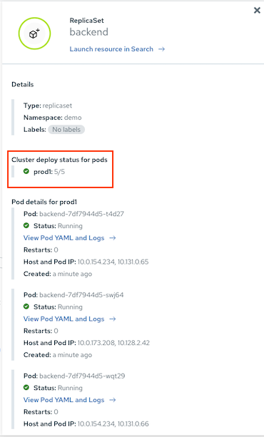
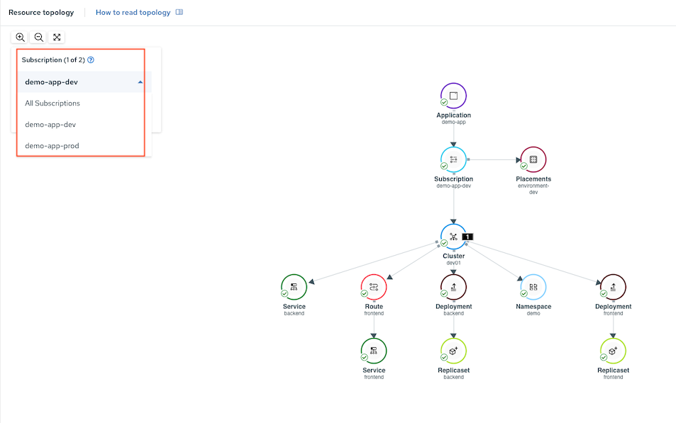

Application Management with RHACM
RHACM Environment
RHACM with 2 managed clusters
- Production Cluster(s) labeled with environment=prod
- Development Cluster(s) labled with environment=dev
Demo Application with Kustomize
- Frontend/Backend App with 2 overlays for environment dev and prod
- Number of replicas
- Backend's environment variables
- Frontend's environment variables
.
├── base
│ ├── backend-service.yaml
│ ├── backend.yaml
│ ├── frontend-service.yaml
│ ├── frontend.yaml
│ ├── kustomization.yaml
│ ├── namespace.yaml
│ └── route.yaml
└── overlays
├── dev
│ ├── backend.yaml
│ ├── frontend.yaml
│ └── kustomization.yaml
└── prod
├── backend.yaml
├── frontend.yaml
└── kustomization.yaml
RHACM Configuration
RHACM application managment configuration
- Create Namespace
- Create Channel
- Create Applicatoion
- Create subscription for production and development environment
- Create placement rule for production and development environment
Deploy
oc apply -f manifests/acm-app-management/01_namespace.yaml oc apply -f manifests/acm-app-management/02_channel.yaml oc apply -f manifests/acm-app-management/03_application_demo_app.yaml oc apply -f manifests/acm-app-management/04_subscription_dev.yaml oc apply -f manifests/acm-app-management/04_subscription_prod.yaml oc apply -f manifests/acm-app-management/05_placement_dev.yaml oc apply -f manifests/acm-app-management/05_placement_prod.yamlor
for i in $(ls -1 manifests/acm-app-management) do oc apply -f manifests/acm-app-management/$i done
ACM Console
Demo App topology

Check number of replicas for prod

Filter by subscription
